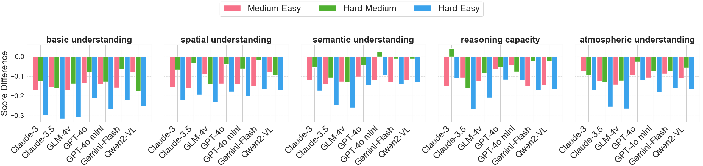
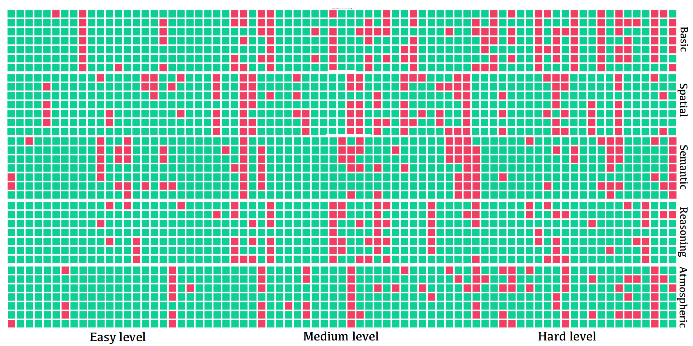
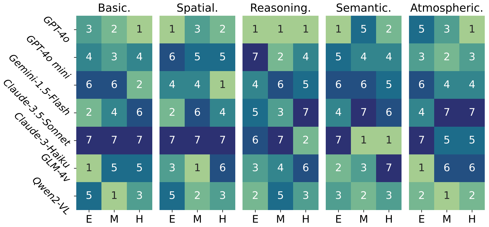
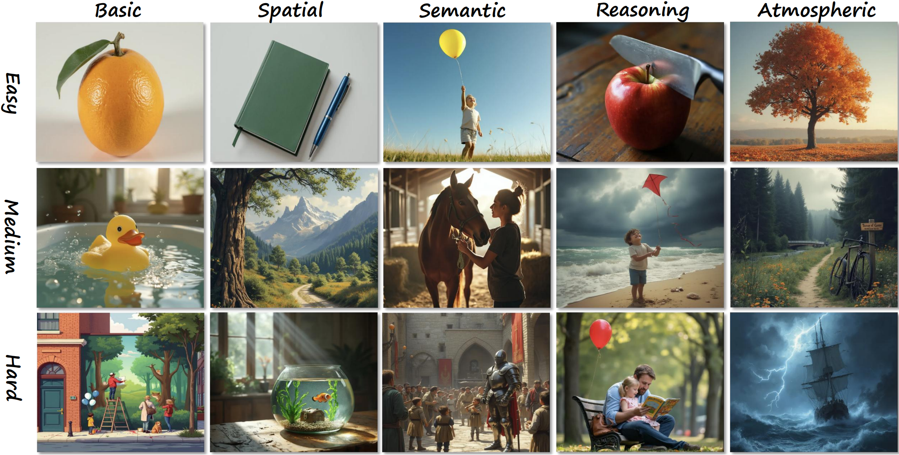

A Comprehensive Overview of the AutoBench-V Framework
Five key evaluation dimensions supported by AutoBench-V, along with their fine-grained sub-aspects, accompanied by questions and images to assist in understanding.
Abstract
Large Vision-Language Models (LVLMs) have become essential for advancing the integration of visual and linguistic information, facilitating a wide range of complex applications and tasks. However, the evaluation of LVLMs presents significant challenges as the evaluation benchmark always demands lots of human cost for its construction, and remains static, lacking flexibility once constructed. Even though automatic evaluation has been explored in textual modality, the visual modality remains under-explored. As a result, in this work, we address a question: "Can LVLMs serve as a path to automatic benchmarking?". We introduce AutoBench-V, an automated framework for serving evaluation on demand, i.e., benchmarking LVLMs based on specific aspects of model capability. Upon receiving an evaluation capability, AutoBench-V leverages text-to-image models to generate relevant image samples and then utilizes LVLMs to orchestrate visual question-answering (VQA) tasks, completing the evaluation process efficiently and flexibly. Through an extensive evaluation of seven popular LVLMs across five demanded user inputs (i.e., evaluation capabilities), the framework shows effectiveness and reliability. We observe the following: (1) Our constructed benchmark accurately reflects varying task difficulties; (2) As task difficulty rises, the performance gap between models widens; (3) While models exhibit strong performance in abstract level understanding, they underperform in details reasoning tasks; and (4) Constructing a dataset with varying levels of difficulties is critical for a comprehensive and exhaustive evaluation. Overall, AutoBench-V not only successfully utilizes LVLMs for automated benchmarking but also reveals that LVLMs as judges have significant potential in various domains.
Introduction
The flourishing of Large Language Models (LLMs) has paved the way for significant advancements in the field of natural language processing (NLP). As the capabilities of LLMs grew, researchers began to explore the integration of visual information understanding capabilities into LLMs, giving rise to the development of Large Vision-Language models (LVLMs). These models are trained on extensive paired image-text datasets, enabling them to perform sophisticated multimodal reasoning by effectively integrating visual and textual information.
With the widespread adoption of LVLMs, evaluating these models has become increasingly important for understanding their limitations and reliability better. Recent research emphasizes the urgent need for comprehensive and sophisticated evaluation standards that accurately assess LVLMs' abilities across various modalities. Various benchmarks aim to evaluate a range of capabilities of LVLMs including 3D understanding, perception and cognition capacity, and multi-discipline understanding and reasoning. Even though these works have solidly evaluated certain aspects of LVLMs' capabilities, they lack the flexibility to support on-demand evaluation across various capability aspects. Recent studies have explored the usage of generative AI in automating evaluation, which offers flexibility in varying evaluation dimensions and reduces the human cost of benchmark dataset construction. While these studies focus on the automatic evaluation of LLMs, we aim to extend this to visual modality.
Automating the evaluation of LVLMs presents several key challenges. First, the targeted capabilities to be evaluated must be clearly identified based on the input demand. This is the foundation that relevant images and appropriate visual question-answering (VQA) tasks can be generated to accurately assess the LVLMs' performance in those specific aspects. Second, the generated images and VQA tasks should be relevant and accurately reflect the evaluation target. Third, the risk of answer leakage from the Examiner LVLM during question generation should be mitigated.
To address the above challenges, we propose AutoBench-V, which supports automated evaluation of LVLMs based on a user demand regarding specific aspects of model capability (e.g., Spatial Understanding). Initially, the input demand is processed by an examiner LVLM, which categorizes it into several overarching aspects. Each aspect is further divided into several fine-grained components, for which image descriptions of varying difficulty levels are generated. To ensure that the descriptions align with their corresponding images, a self-validation mechanism is applied using VQA. Furthermore, an error control mechanism is implemented to prevent a negative impact on the generation of questions and reference answers. The generated questions and images are then presented to the evaluated LVLM to generate responses, which are assessed against reference answers.
Contributions
- An automated LVLM evaluation framework. This proposed AutoBench-V is the first automated framework for benchmarking LVLMs' capability. The framework leverages text-to-image models to generate images for evaluation and employs GPT-4o as an examiner to conduct VQA evaluations. This automation significantly reduces human involvement, enhancing the efficiency and objectivity of the evaluation process.
- Extensive experiments validating the framework's effectiveness. We conducted comprehensive experiments, including main evaluations on multiple models, examiner superiority tests, option position bias analysis, and human assessments. The results confirm the framework’s robustness and effectiveness in evaluating LVLMs.
- In-depth analysis of LVLMs' performance across diverse visual tasks. Through systematic evaluation with varied user inputs, we find that LVLMs demonstrate strong proficiency in abstract conceptual understanding while exhibiting comparatively lower performance in concrete visual reasoning tasks. These insights offer a perspective on the current state of LVLM technology, highlighting areas with potential for future development and exploration.
Performance (Accuracy) details of all models on five user inputs and three difficulty levels
| Model | User Input↑ | |||||
|---|---|---|---|---|---|---|
| Basic. | Spatial. | Seman. | Reason. | Atmos. | Average | |
| Easy | ||||||
| GPT-4o | 90.18% | 86.09% | 93.81% | 88.13% | 93.94% | 90.43% |
| GPT-4o mini | 90.18% | 81.28% | 91.24% | 81.92% | 95.45% | 88.01% |
| Gemini-1.5-Flash | 89.29% | 81.82% | 91.19% | 85.31% | 92.75% | 88.07% |
| Claude-3.5-Sonnet | 91.07% | 83.96% | 91.75% | 85.31% | 94.33% | 89.28% |
| Claude-3-Haiku | 89.29% | 80.21% | 90.72% | 82.49% | 91.41% | 86.82% |
| GLM-4v | 91.96% | 83.96% | 87.01% | 92.78% | 96.45% | 90.43% |
| Qwen2-VL | 90.18% | 81.82% | 92.27% | 87.57% | 96.00% | 89.57% |
| Medium | ||||||
| GPT-4o | 76.87% | 72.25% | 83.64% | 81.95% | 84.35% | 79.81% |
| GPT-4o mini | 76.19% | 67.26% | 79.09% | 77.56% | 84.78% | 76.98% |
| Gemini-1.5-Flash | 73.47% | 66.96% | 78.18% | 70.44% | 84.14% | 74.64% |
| Claude-3.5-Sonnet | 75.51% | 67.84% | 77.73% | 74.63% | 81.74% | 75.49% |
| Claude-3-Haiku | 72.11% | 64.76% | 78.90% | 67.31% | 83.91% | 73.40% |
| GLM-4v | 74.83% | 74.89% | 79.91% | 74.63% | 82.17% | 77.29% |
| Qwen2-VL | 82.31% | 74.01% | 80.45% | 73.17% | 85.21% | 79.03% |
| Hard | ||||||
| GPT-4o | 69.12% | 68.28% | 79.36% | 76.50% | 81.82% | 75.02% |
| GPT-4o mini | 63.43% | 61.23% | 81.65% | 69.94% | 77.27% | 70.70% |
| Gemini-1.5-Flash | 66.91% | 65.20% | 77.10% | 68.16% | 76.88% | 70.85% |
| Claude-3.5-Sonnet | 59.56% | 64.60% | 66.97% | 58.47% | 68.75% | 63.67% |
| Claude-3-Haiku | 59.56% | 58.15% | 73.39% | 71.58% | 74.43% | 67.42% |
| GLM-4v | 61.03% | 60.79% | 66.82% | 66.12% | 69.89% | 64.93% |
| Qwen2-VL | 64.71% | 64.76% | 79.36% | 71.03% | 79.59% | 71.89% |
Figures
Figure: Model performace
Score variation of models from easy to hard difficulty across different user inputs. As task difficulty increases, the performance disparity between models becomes more pronounced.
Figure: Samples
We randomly sampled 75 question instances for each user input, with 25 questions from each difficulty level. We then visualized the response patterns of various models to these questions (the red means). The rows in each user input, from top to bottom, represent the response situations of \texttt{Claude-3.5-sonnet}, \texttt{Claude-3-haiku}, \texttt{Gemini-1.5-flash}, \texttt{GLM-4v}, \texttt{GPT-4o}, \texttt{GPT-4o mini}, and \texttt{Qwen2-VL}, respectively.
Figure: ranking
The ranking of different models in five user inputs under different difficulty levels.
Figure: examples
Images examples corresponding to different user inputs under different difficulty levels.
BibTeX
TODO